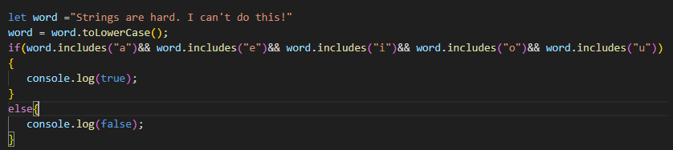
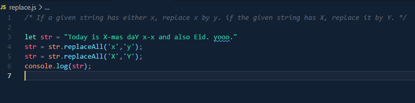

This is used to check the size of the string (including the white spaces). Example---
const str = "String can be confusing";
console.log(str.length);
Output: 23
It is possible to access certain character by Index but it is NOT POSSIBLE TO CHANGE any character by using index. Use replace instead. Example--
const str = "Ami";
console.log(str[0]);
Output:A
Strings are Case Sensitive. So, Ami and ami is NOT same. In order to compare two strings, they are to be converted to uppercase/lowercase first. Example--
let str = "Ami";
let str2 = "ami";
console.log(str.toLowerCase() === str2.toLowerCase());
Output: true
P.S. same can be done for upper case-- console.log(str.toUpperCase() === str2.toUpperCase());
Strings are also Space Sensitive. While comparing strings, it's a good practice to use trim as well. Trim is used to remove space from beginning and the end. But it can NOT remove space from the middle. Example--
let str = " ami";
let str2 = "ami ";
console.log(str.trim() === str2.trim());
Output: true
Slice is used to slice a string.
Syntax: slice(start index, end after) .Example--
let me = "I love Anime";
console.log(me.slice(7, 12));
OR,
console.log(me.slice(7)); ---(this means from the 7th index to the end)
Output: Anime
Includes checks if a specific portion of the string exists in that string or not. Example--
let me = "I love Anime";
console.log(me.includes("Anime"));
Output: true
Concat is to join two strings together. Example--
let str = "This is my notes."
let str2 ="I hope I don't forget all this."
let newStr = str.concat(str2);
console.log(newStr);
Output: This is my notes.I hope I don't forget all this.
Replace is to replace specific portion of the string with a new letter/word.. Example--
let me = "I love Anime";
console.log(me.replace("Anime","Coding"));
Output: I love Coding
Split is very useful in reversing string. And ✅Split is a way to CONVERT STRING TO AN ARRAY✅.Example---
let str1 = "Converts String to Array";
let strArr = str1.split(" ");
console.log(strArr);
Output: [ 'Converts', 'String', 'to', 'Array' ]
P.S. split() ---> (converts the whole string to a single element in an array)
split("")--->(converts the every letter of the string into elements in an array)
split(" ")--->(converts each word in a string in an element of an array)
✅Join Combines all elements in an ARRAY into a single STRING✅. Also useful in reversing a string by converting the reversed array into a string!
Reverse is used to reverse an array since Strings can not be directly modified.Example---
let str1 = "We need split, replace and join to reverse a string";
let strArr = str1.split(" "); ---('split' converts the string into array of words)
let revArr = strArr.reverse(); ---('reverse' reverses the sequence of arrays)
let revStr = revArr.join(" "); ---('join' converts the all the elements of arrays into a single string)
console.log(revStr);
OR,
Shortcut: let revStr = str1.split(" ").reverse().join(" ");
console.log(revStr);
Output:string a reverse to join and replace split, need We
Output: 8
OR,
Output: false
replaceAll is used to replace every letter of the string that we want to change and not just the first one.
Output: Today is Y-mas daY y-y and also Eid. yooo.
At first the String in converted into an array using split. The result variable is an empty space to store the string. word[i][0] is used to take every elements/words first letter and toUpperCase is used to convert it into capital. The slice(1) is rest of the letters in the words except the 1st one. And we store all of that in the result. The if condition is used to create space after every word.